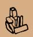

| |
Ce
qu'il faudrait faire |
 |
Pour
faire progresser l'humanité.
Il faudrait
faire une liste des choses qu'il faudrait faire.
(Andréas)
Il
faudrait faire quelque chose contre la publicité.
La publicité n'est pas nécessaire
pour que les gens achètent ce dont ils
ont besoin. Elle n'aide pas à choisir des
produits meilleurs. Elle engloutit des masses
de pognon et occupe des milliers de gens qui pourraient
faire quelque chose d'utile. Elle induit les gens
à acheter trop, trop cher, elle les pousse
à fumer, à boire, à frimer.
Elle dégoute par sa malhonnêteté.
Elle détourne l'attention des automobilistes.
Elle remplit les boites aux lettres de conneries.
Bientôt elle va vous téléphoner.
(voir Bile Noire n°14)
(Andréas)
Il
faudrait étudier scientifiquement comment
les gens se torchent. Tout le monde se torche,
mais personne n'en parle. Des médecins,
des ingénieurs, des mathématiciens,
des musiciens, des philosophes, à force
de se torcher tous les matins ont à coup
sûr développé des techniques
plus hygiéniques, économiques, élégantes,
acoustiquement préférables et moralement
supérieures qu'ils emporteront dans leur
tombe si personne ne fait rien. (voir Bile Noire
n°15, à paraître)
(Andréas)
Il
faudrait photographier la nuit des routes éclairées
par les lampadaires à lumière orange
vachement belle. On l'a sans doute déjà
fait, mais alors il faudrait qu' on me dise ou
on peut voir ces photos. (c'est fait ! Voir ici
et là)
(Andréas)
Il
faudrait faire une base de données des
bonhommes de neige du monde entier. Au moins,
il restera une trace de ces oeuvres pour la postérité
et ceux qui n'auront pas plus d'idées que
de mettre deux gros tas l'un sur l'autres pourront
s'inspirer. Et puis, est ce que les enfants du
monde conçoivent leur bonhomme de neige
de la même manière s'ils habitent
la Sibérie ou la Suisse ? Une étude
ethnologique a-t-elle déjà été
faite ?
(Carole)
Il
faudrait faire un musée du carnaval à
Lucerne, pour montrer les plus beaux costumes
à tous ceux qui ne vont pas au carnaval
chaque année.
(Andréas)
Il faudrait changer le processus de création des lois. On ne devrait
pas pouvoir introduire de nouvelle loi sans en éliminer une ancienne.
Ca freinerait la prolifération de règlements et d'interdictions, et ça
nous laisserait plus libres.
(Andréas)
Il faudrait documenter sur un site internet les contradictions et les
hypocrisies de l'UDC, le parti de la haine et de la peur. Il faudrait
noter chacune de leurs interprétations mensongères des statistiques, et
chaque fois qu'ils font l'amalgame entre la criminalité et les
étrangers . Il faudrait bien montrer que la réduction de l'état qu'ils
réclament pénalise les paysans qu'ils sont censés défendre. Il faudrait garder
la trace de toutes leurs arrogances. Il faudrait faire la liste de
leurs démêlés avec la justice qui vont de la tentative d'assassinat
(l'assassin malchanceux a au moins été exclu du parti) à l'emploi de
sans-papiers (par Jean Fattebert, qui est toujours vice-président de l'UDC). Il
faudrait aussi mettre en évidence le rôle de Christoph Blocher, le
responsable de la dérive nauséabonde du parti. Il suffirait, pour accomplir
tout ce travail, de faire des comptes-rendus d'articles parus dans les
journaux. Par Il faudrait aussi qu'on m'explique pourquoi Christoph
Blocher, qui est très intelligent, ne s'entoure que d'imbéciles.
(Andréas)
Il faudrait brancher ceux qui pédalent dans les fitness sur des
générateurs. Il faudrait leur payer la valeur du courant qu'ils produisent à
la sueur de leur front. Quand on a besoin de quelqu'un pour déblayer la
neige devant le garage ou ramasser les feuilles dans le jardin, on
devrait pouvoir s'adresser à un fitness pour qu'il envoie quelqu'un qui a
besoin de se défouler. On lui donnerait un peu d'argent de poche, et le
fitness prendrait une commission.
(Andréas)
Vous
avez des idées ? Envoyez
les nous !
|